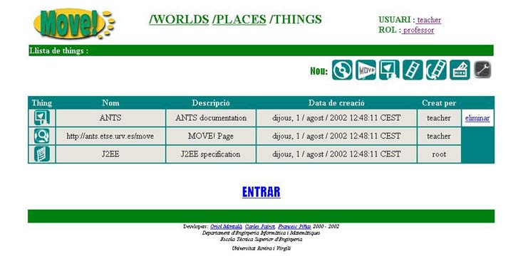
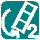
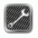

2.4 Zona Things
Despr�s d'entrar a un Place ens trobarem a la zona THINGS del Place i World seleccionats amb anterioritat.

Aqui trobarem una taula amb totes les Things que hi ha en el Place on ens trobem. Cada Thing de la taula tindr� la seg�ent informaci�:
- Thing: icona corresponent al tipus de Thing
- thing de tipus Slides
- thing de tipus Simulation3D
- thing de tipus Audio
- thing de tipus Banner
- thing de tipus File
- thing de tipus URL
- thing de tipus Votation
- thing de tipus VideoStream

thing de tipus VideoStream2- thing de tipus Video
- thing de tipus Object
 thing de tipus Information
thing de tipus Information- Nom: nom de la Thing
- Descripci�: descripci� de la Thing
- Data de creaci�: data en qu� ha estat creada
- Creat per: login de l'usuari que la creada
Els diferents tipus de icones amb qu� ens trobarem seran els seg�ents:
A m�s tindrem la oportunitat d'eliminar aquelles Things que ja no ens interessin clicant sobre  , excepte les de tipus File, URL i Object les quals sols podran ser eliminades des del interior de l'entorn 3D del Place. (NOTA: Nom�s podrem eliminar una thing en el sup�sit de que hagi estat creada per nosaltres o b� en el cas que tinguem el rol d'administrador)
, excepte les de tipus File, URL i Object les quals sols podran ser eliminades des del interior de l'entorn 3D del Place. (NOTA: Nom�s podrem eliminar una thing en el sup�sit de que hagi estat creada per nosaltres o b� en el cas que tinguem el rol d'administrador)
A part d'aquesta taula tamb� podem observar que apareixen una s�rie d'icones a la part superior d'aquesta:
Es tracta de la barra de Tools actives en aquest Place i que, a m�s, permeten crear Things del seu tipus solament fora de l'entorn 3D. Clicant sobre la corresponent icona de la Tool anirem a la pantalla on podrem crear Things per aquesta Tool.
Pel que fa a la icona
, aquesta ens permetr� accedir a la pantalla de configuraci� de les Tools.Una vegada finalitzades les nostres accions en aquesta zona THINGS, ja nom�s ens quedara clicar sobre per tal d'entrar a l'entorn 3D del Place i comen�ar a interactuar amb les tools que ens ofereix MOVE! i els diferents usuaris connectats.